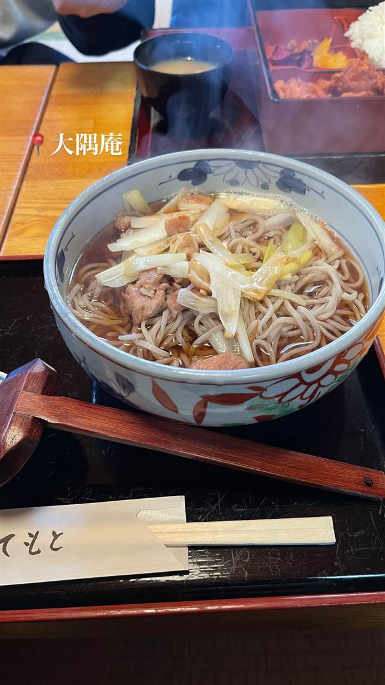

大隅庵
大隅庵
REVIEWS
世間の評判
3.01食べログ
チキンカツカレーと接客の柔軟さ
- サクサクの衣のチキンカツと辛すぎない優しい味わいのカレーを評価する声がある
- 営業時間外でも柔軟に対応してくれる接客の良さを挙げる人もいる
食べログ 口コミ3件
| 看板 | 鴨南蛮そば |
|---|---|
| どこから | 東京から1時間ほど |
| 営業時間 | 月〜金 11:00-15:00、17:00-19:30 土 11:00-19:30 日 11:00-15:00、17:00-19:30 |
| 予約 | 予約可 |
| 場所 | 生田 神奈川県川崎市多摩区生田 |
| メモ | 駐車場あり・貸切可・予約可、電子マネー/QRコード決済不可 |
食べたもの：鴨南蛮そば